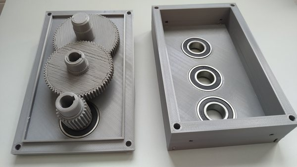
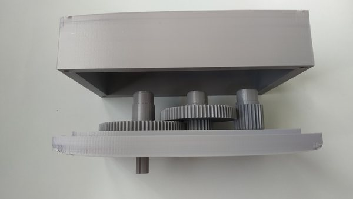
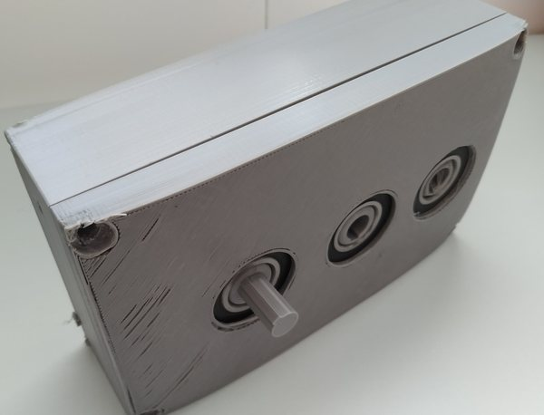
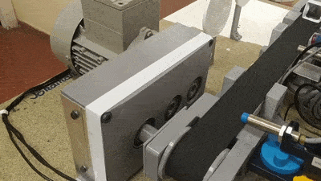
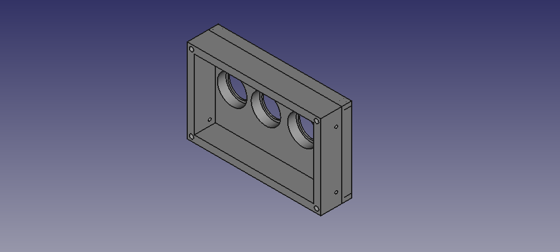
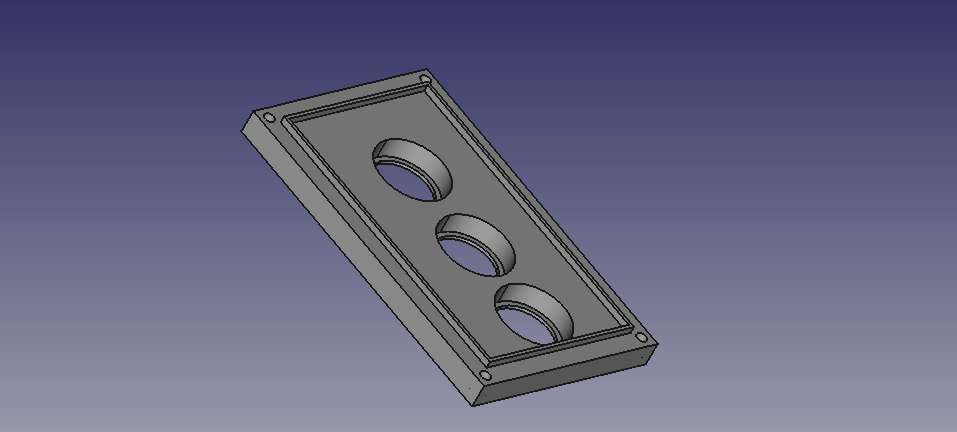
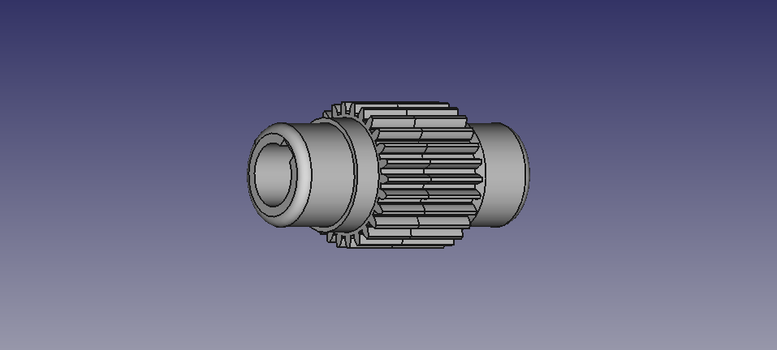
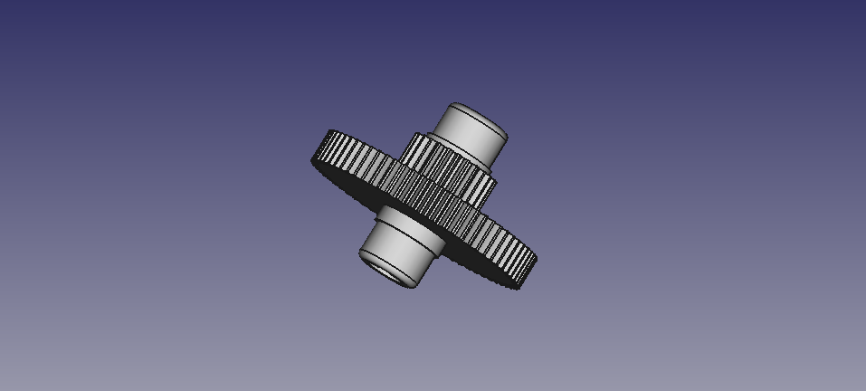
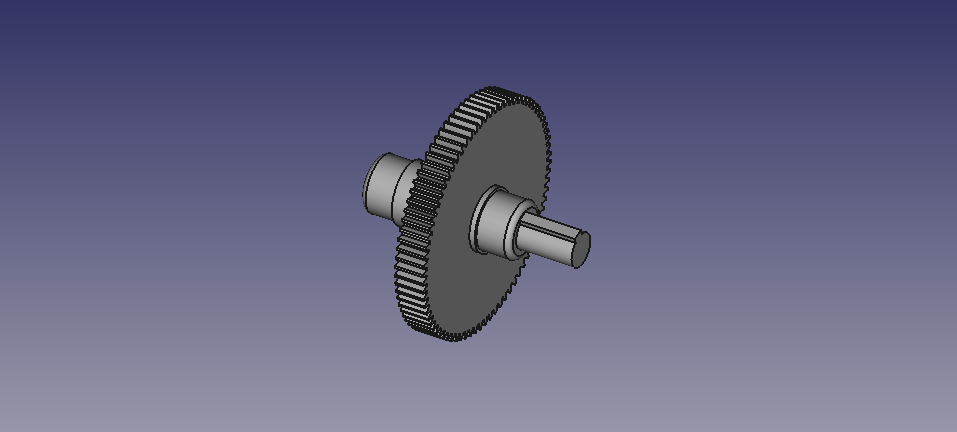

Esta reductura acopla la cinta transportadora al motor de 1450 rpm, reduciendo la velocidad de la cinta.
La reducción obtenida no ha sido sufiente, de forma que si el motor gira a su velocidad nominal 1450 rpm, la cinta tiene una velociad alta, por lo que recomienda la utilización del variador.
Se intentará en mejorar la reductora para obtener una velocidad inferior.









